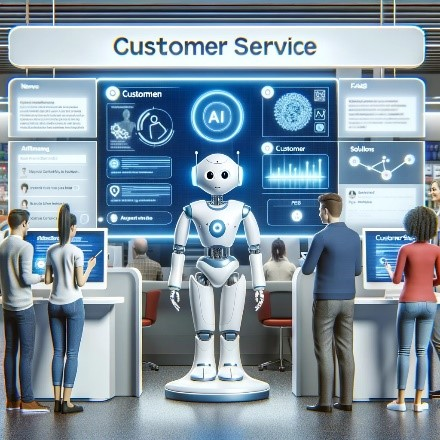

Key Areas of AI Applications
Education:
Artificial Intelligence (AI) is rapidly transforming the education sector, offering innovative solutions
to traditional learning challenges. AI customizes teaching to fit each student's pace, significantly
aiding in subjects that require a strong conceptual foundation like mathematics and science. It analyzes
learning behaviors to provide tailored resources, ensuring a deeper grasp of topics.
AI tutoring systems
provide further personalized support by aiding with homework and exam preparation, tailored to
individual learning styles. This not only makes education more accessible but also enhances
effectiveness, marking a substantial shift in how educational content is delivered and assimilated.
Moreover, AI extends its benefits to language learning through intelligent applications that offer
real-time feedback and pronunciation practice, mimicking natural language acquisition. Beyond pedagogy,
AI streamlines administrative tasks, such as grading and attendance, allowing educators to dedicate more
energy to teaching. These advancements showcase AI's potential to not only enhance learning outcomes but
also make education more adaptable and learner-centric.
Robotics:
Robotics, when combined with Artificial Intelligence (AI), transforms the landscape of automation and
significantly enhancing machine efficiency. AI equips robots with the ability to learn from experiences
and adapt to new tasks or environments. These intelligent machines are no longer confined to repetitive
tasks; they can now understand their surroundings and make decisions, enhancing their usefulness across
various industries. From manufacturing lines to delicate surgical procedures, AI-driven robots are
reshaping the way work is done, offering precision and reliability that often surpass human
capabilities.
The use of AI in robotics brings a host of advantages. It enables robots to process and analyze vast
amounts of data quickly, identify patterns, and make informed choices. This capability is pivotal in
tasks that require complex problem-solving or real-time decision-making. Additionally, AI allows for
improved object recognition, spatial awareness, and even social interaction, making robots more
intuitive and adaptable companions in both professional and personal settings. As AI technology
advances, the potential for robotics continues to expand, promising new levels of autonomy and
ingenuity.
Agriculture:
Artificial Intelligence (AI) is steadily becoming integral to agriculture, enhancing both yield and
efficiency. Through AI, farmers gain detailed insights into crop health, soil quality, and water usage.
Smart farming
techniques involve AI algorithms processing data from satellites and drones to manage crops and predict
yields with impressive accuracy. This precision reduces resource wastage and increases farm
productivity. For example, AI-powered sensors can detect the moisture content of soil, enabling precise
irrigation. Similarly, image recognition technologies identify pests and nutrient deficiencies in crops,
allowing for early intervention.
AI also plays a vital role in supply chain optimization and risk management in agriculture. Predictive
analytics powered by AI forecast market demands, helping farmers plan their harvests accordingly.
Autonomous tractors and harvesters, guided by AI, streamline operations, and AI-driven agricultural bots
perform labor-intensive tasks, mitigating human labor shortages. These points illustrate how AI is
transforming agriculture into a high-tech industry, focused on sustainability and precision.
Automobiles:
The integration of Artificial Intelligence (AI) in the automobile industry is driving a significant
transformation, heralding the era of smart vehicles. AI in automobiles is not just about autonomous
driving; it encompasses a wide
range of innovations. For instance, AI algorithms are used in advanced driver-assistance systems (ADAS)
to enhance safety features like automatic braking, lane-keeping assist, and pedestrian detection. These
systems constantly learn from vast amounts of data, improving their decision-making abilities over time.
Furthermore, AI is integral in optimizing vehicle efficiency, from managing battery usage in electric
cars to predicting maintenance needs. This ensures longer vehicle lifespans and more reliable
performance.
Here are some examples of how AI is being implemented in the automotive industry:
Autonomous Driving: AI enables vehicles to navigate and operate without human
intervention by processing data from sensors and cameras, enhancing road safety and reducing traffic
incidents.
Maintenance: AI analyzes vehicle data to anticipate maintenance needs, ensuring
timely
repairs and prolonging vehicle longevity, thus enhancing reliability and safety.
Enhanced Safety Features: AI-driven systems in cars provide advanced safety
features
like collision detection, automatic braking, and lane-keeping assistance, significantly reducing the
risk of accidents and improving overall road safety.
Traffic and Route Optimization: AI optimizes driving routes by analyzing
real-time
traffic data, helping to decrease commute times, reduce fuel consumption, and alleviate congestion
on roads.
Navigation:
Navigation has evolved significantly with the advent of Artificial Intelligence (AI), transforming how
we traverse our world. AI-based navigation systems, integrated into
devices like smartphones and car GPS units, offer more than just directions. They analyze vast amounts
of data, including traffic patterns, weather conditions, and road closures, to provide the most
efficient routes. This real-time adaptability ensures a smoother, faster journey, reducing travel time
and fuel consumption. AI also personalizes navigation by learning from user preferences, suggesting
routes and destinations aligned with past choices.
Moreover, AI in navigation extends beyond terrestrial travel, aiding in maritime and aerial routes as
well. These systems predict potential hazards and optimize routes for safety and efficiency. The future
of navigation with AI promises further advancements, including fully autonomous vehicles and smarter,
interconnected transportation systems. This technology not only enhances individual travel experiences
but also contributes to broader societal benefits like reduced carbon footprints and improved urban
mobility.
Security and Surveillance:
Artificial Intelligence (AI) has revolutionized the field of security and surveillance, offering
advanced solutions that enhance safety and efficiency.
AI algorithms can analyze vast amounts of video data in real-time, identifying potential threats and
unusual activities with remarkable accuracy. These systems learn from patterns and behaviors, enabling
them to detect anomalies like unauthorized access or unusual crowd movements. AI also assists in facial
recognition and license plate scanning, aiding law enforcement in tracking and preventing crime. The
integration of AI in security systems provides a proactive approach to surveillance, ensuring a higher
level of protection in public spaces, commercial areas, and sensitive installations.
Here are some Key aspects of how Security and Surveillance of AI is being using rapidly:
• Real-Time Monitoring and Analysis: AI enables continuous and real-time monitoring of surveillance
footage, efficiently analyzing video feeds for any unusual activity or potential security threats.
• Facial Recognition Technology: AI-powered facial recognition systems can quickly identify
individuals
in crowds, aiding in both finding missing persons and tracking suspects, thereby enhancing public
safety.
• Anomaly Detection: AI algorithms are adept at detecting anomalies in behavior or environment, such
as
unattended bags in public spaces or unusual movements, triggering alerts for further investigation.
• Enhanced Data Processing: AI can process and analyze vast amounts of data from various sources,
including CCTV, sensors, and databases, much more efficiently than traditional methods.
• Predictive Analysis: AI systems can predict potential security breaches by analyzing patterns and
historical data, allowing for preemptive action to prevent incidents.
• Automated Response and Alerting: In case of detection of a security threat, AI systems can
automatically alert authorities or trigger security protocols, ensuring a swift response to
potential
dangers.
Customer Service:
The advent of Artificial Intelligence (AI) in customer service has transformed the landscape of client
interactions and support. AI-driven solutions, such as chatbots

and virtual assistants, offer 24/7 service, handling a wide range of queries with efficiency and
precision. This technology excels in providing quick responses to common questions, freeing human agents
to tackle more complex issues. Furthermore, AI can analyze customer data to personalize interactions,
making recommendations based on past behavior and preferences. This not only enhances the customer
experience but also boosts satisfaction and loyalty. AI's ability to learn from interactions means that
the quality of service continuously improves, adapting to the evolving needs of customers.
Essential aspects of AI in Customer Service:
• Round-the-Clock Availability: AI systems ensure constant customer support, handling inquiries any
time
of the day.
• Handling Volume: AI can manage a large volume of queries simultaneously, reducing wait times.
• Personalization: Leveraging data analytics, AI offers tailored recommendations and responses.
• Multilingual Support: AI tools can interact in various languages, broadening customer reach.
Entertainment:
Artificial Intelligence (AI) is swiftly becoming the backbone of modern entertainment, profoundly
changing how we interact with various media. In the film
industry, AI algorithms are used to predict box office success, helping studios make informed decisions
about which films to greenlight. Moreover, streaming services employ AI to suggest content to viewers,
enhancing user experience by curating shows and movies that align with their viewing history and
preferences. AI is also instrumental in creating realistic visual effects, often indistinguishable from
real-life scenes, which enhances the visual storytelling of movies and video games.
In the music sector, AI is used to analyze trends, which assists artists and producers in creating
compositions that have a higher likelihood of becoming hits. AI's versatility in entertainment is
growing, promising ever more innovative and customized experiences.
Lifestyle:
Artificial Intelligence (AI) has seamlessly integrated into our daily lifestyles, enhancing the
convenience and quality of our everyday routines. Smart home devices powered by AI, like voice
assistants and automated home systems, are prime examples.
They learn from our habits to control home heating, lighting, and security, making our living spaces
safer and more energy-efficient. Moreover, AI in wearable technology monitors our health metrics,
providing personalized feedback and early warnings about potential health issues. This proactive
approach to wellness illustrates how AI contributes to a healthier lifestyle.
In the realm of personal finance, AI-based apps assist with budgeting and investing, making financial
management accessible to everyone. They analyze spending patterns to offer customized savings advice and
even automate investments based on individual risk preferences. These facets of AI-driven technology
represent a growing trend towards a smarter, more efficient way of living that prioritizes personal
well-being and sustainability.
Here is summarized of Key applications of AI in lifestyle:
• Smart home automation for efficient living.
• Personalized health and fitness recommendations.
• AI-assisted scheduling and reminders.
• Tailored shopping experiences through predictive purchasing suggestions.
• Enhanced learning and self-improvement through AI-curated content.
Healthcare:
Healthcare is changing a lot because of Artificial Intelligence (AI). AI is like a smart helper for
doctors. It looks at lots of health information to find diseases
quicker and more clearly. This technology also figures out the best medicine or treatment for each
person. AI is in some special machines that keep track of people's health all the time and tell doctors
if there's a problem. It even helps in operations to make them safer. Plus, AI lets people talk to
doctors online, making healthcare easier to get. AI is really making healthcare better and more helpful
for everyone.
Essential aspects of Artificial Intelligence application in healthcare:
• Enhanced diagnostic accuracy through medical imaging analysis.
• Personalized treatment plans based on patient data.
• Predictive health analytics for preventive care.
• AI-assisted robotic surgery for precision and reduced recovery times.
• Automation of administrative tasks for healthcare professionals.
Human resource (HR):
Artificial Intelligence (AI) is revolutionizing the field of human resources, offering a paradigm shift
from traditional methods to more efficient, data-driven
processes. It's changing how HR teams recruit by quickly analyzing resumes to identify top candidates.
This smart tech also automates routine tasks like answering common employee queries, which saves a lot
of time. It's like having an ever-ready, efficient HR assistant.
AI also helps in training employees. It creates training programs that fit each person's needs, making
learning more effective. AI's cleverness can even predict when someone might think about leaving their
job. This lets HR step in early to keep them. AI is really changing how HR works, making it smarter and
more focused.
Furthermore, AI-powered chatbots have become virtual assistants, handling routine inquiries and freeing
up HR professionals to focus on more strategic tasks.